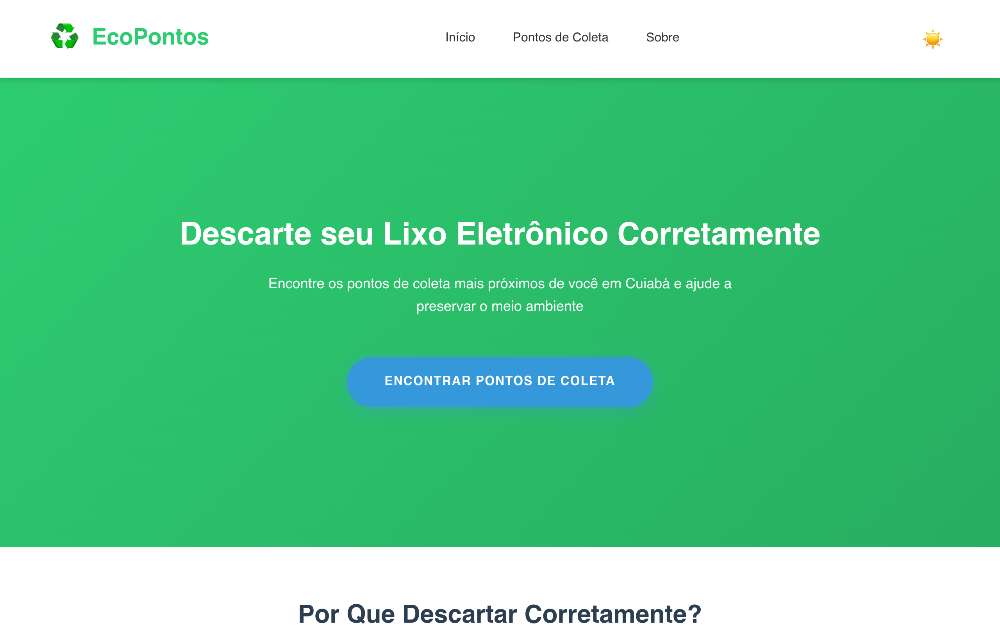

Site · Cuiabá
EcoPontos
Site que ajuda a encontrar pontos de coleta de lixo eletrônico em Cuiabá, para quem quer descartar eletrônicos do jeito certo.
- HTML
- CSS
- JavaScript
Cauanzera · galeria
Os efeitos do site antigo, refeitos no visual novo. Todos animam só transform e opacity, param quando saem da tela e respeitam quem pede menos movimento no sistema.
01
Estrelas em canvas que piscam devagar e se ligam em constelação perto do cursor. No celular, a constelação vai até onde você toca. "Repetir entrada" mostra a abertura de novo.
No site antigo A constelação do topo, que desenhava cada estrela com sombra borrada e era a maior causa do travamento.
Portfólio · 2026
Cauanzera
Desenvolvedor front-end em formação, focado em experiências visuais e interfaces imersivas.
02
A lua vira sol e o tema novo cresce num círculo a partir do botão. Troca a galeria inteira, então dá para ver todos os outros componentes no claro.
No site antigo O ícone de lua e sol que ficava dentro do menu em arco.
Tema escuro
03
Passe o mouse: uma luz segue o cursor e acende a borda, o card inclina de leve e o print desliza dentro da moldura. O card inteiro é clicável.
No site antigo Os cards eram vazios e passavam sozinhos num letreiro infinito.

Site · Cuiabá
Site que ajuda a encontrar pontos de coleta de lixo eletrônico em Cuiabá, para quem quer descartar eletrônicos do jeito certo.
Site · Canvas
A primeira versão deste site, escrita à mão e sem framework: campo de estrelas em canvas 2D, um terminal para navegar pelas seções e tema claro e escuro.
04
Clique em "Ver detalhes": o card gira em 3D com uma mola curta e mostra no verso o que você fez, as tecnologias e os links.
No site antigo Os cards viravam em 3D quando o mouse passava por cima.
Site · Cuiabá
Site · Cuiabá
O que eu fiz
[2 ou 3 linhas: o problema, o que você construiu e o que aprendeu no caminho]
Site · Canvas
Site · Canvas
O que eu fiz
[O que você quis testar com esse site e o que aprendeu fazendo ele]
[Tipo · detalhe]
[Nome, print, o que você fez e o link]
05
Role até ela: o título sobe de trás de uma máscara, os fios se desenham e o resto entra em sequência. "Rever animação" toca de novo.
No site antigo Os textos entravam desfocados com blur, um efeito caro de desenhar.
Seção de exemplo
[3 ou 4 frases do seu jeito: quem você é, como começou a programar e o que mais gosta de construir]
06
Digite help ou toque nos atalhos. Responde projetos, sobre, contato e tema, e guarda os segredos matrix, scan e cauanzera.
No site antigo Uma janela estilo Windows antigo com os segredos matrix, scan, rose e cauanzera.
07
Clique no botão do meio e as cinco fatias abrem em leque. Funciona com as setas e Esc no teclado, e a fatia Tema troca o tema da página.
No site antigo O menu principal, preso no topo da tela, com brilho e desfoque de fundo.
08
Chegue perto do botão com o mouse e ele é puxado pelo cursor. Ao clicar, copia o e-mail e confirma com um check que se desenha.
No site antigo O e-mail era um link mailto e GitHub e LinkedIn ficavam em cards com desfoque de fundo.
caua.pbritto